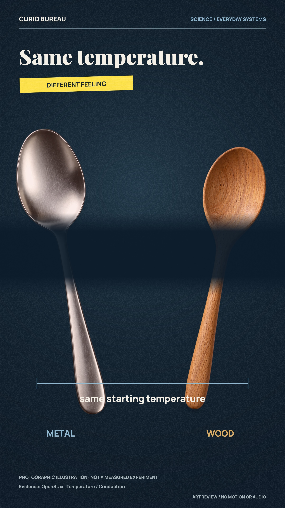
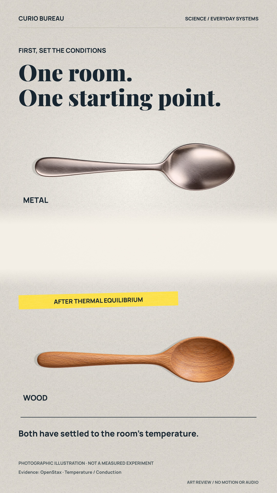
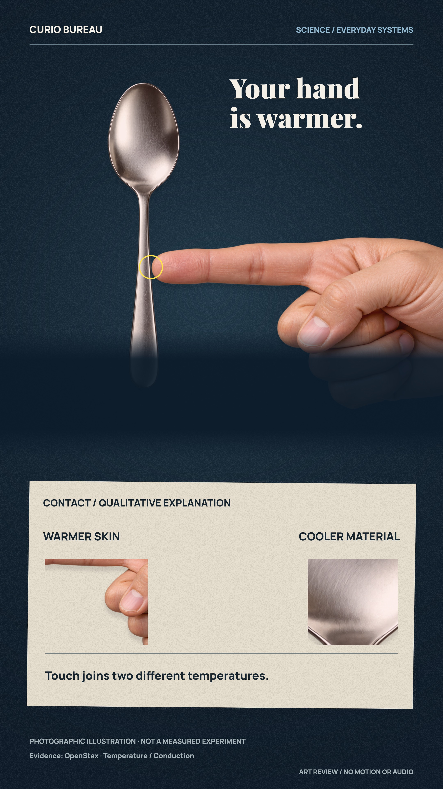
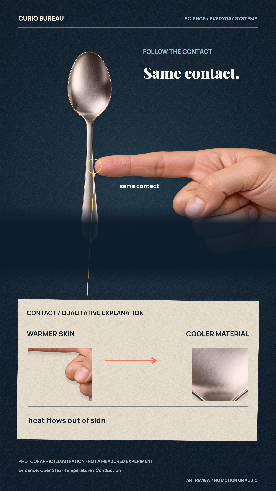
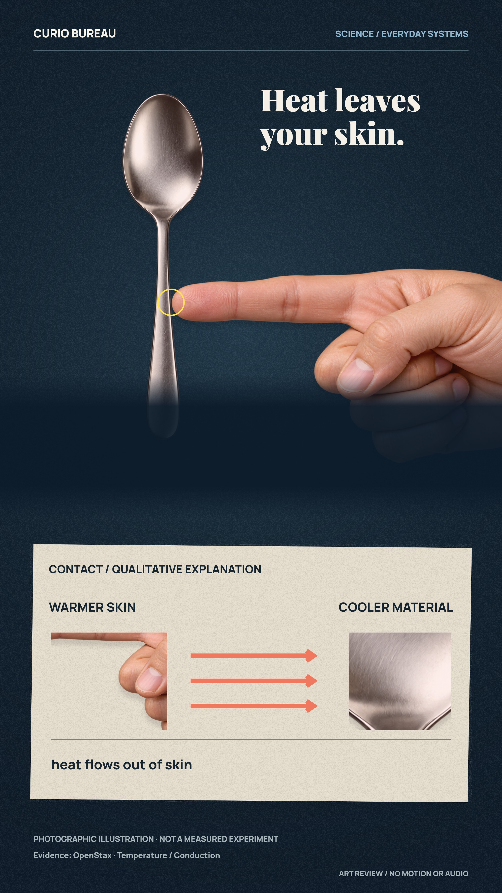
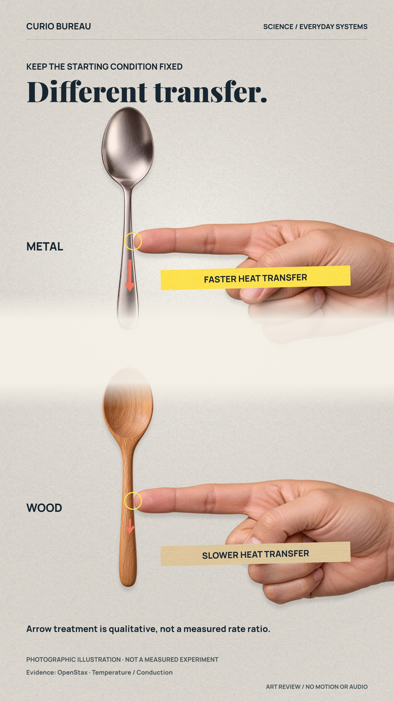
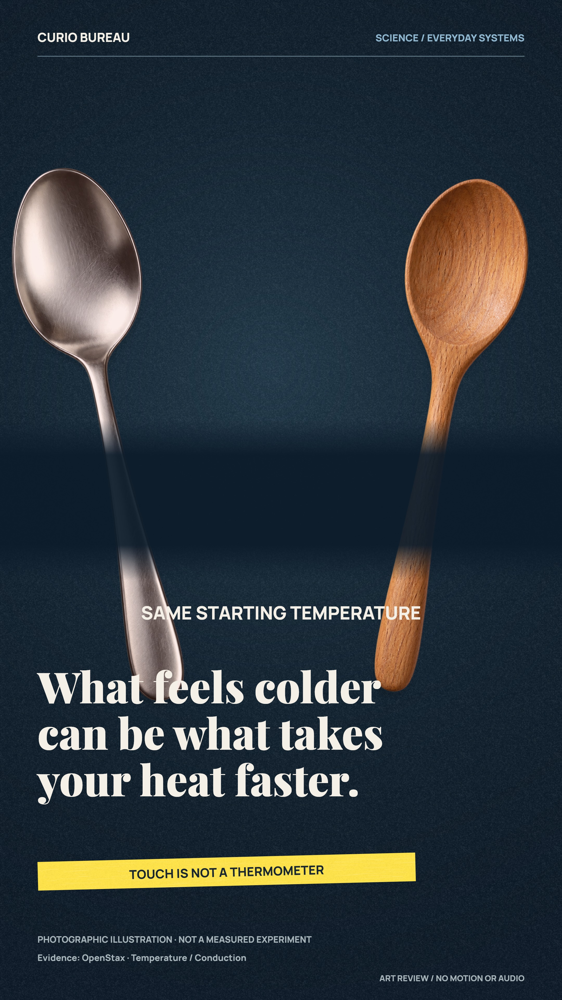
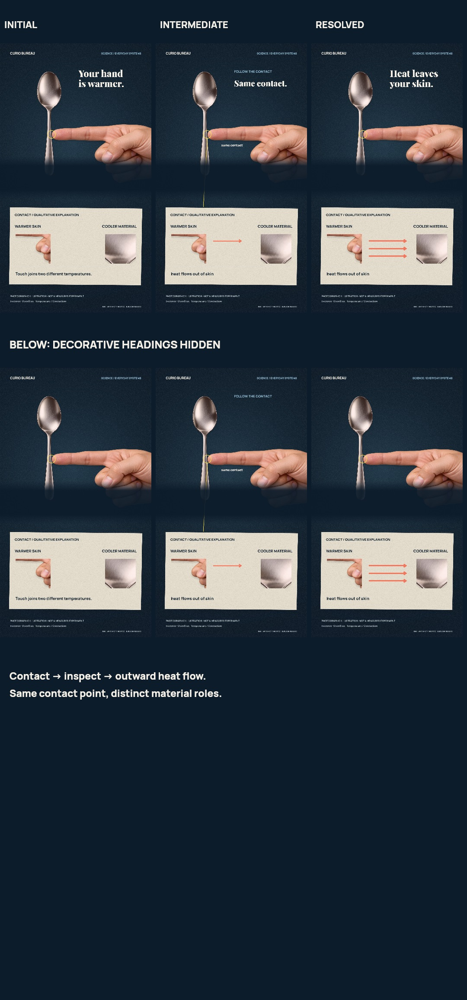

Seven connected states. Five demanding checkpoints and a three-state contact passage. Owner art/sequence approval pending.
Static art only. Generated photographic illustrations, qualitative heat-flow marks, no measured temperatures. Final voice, music, SFX, captions, motion and locked endcard are subsequent production stages.
Five-checkpoint overview · Contact passage and heading-hidden review · Decisions, limitations and source provenance








Every image link opens a 2160×3840 still. This gallery contains no video, tracking, external scripts or network assets.